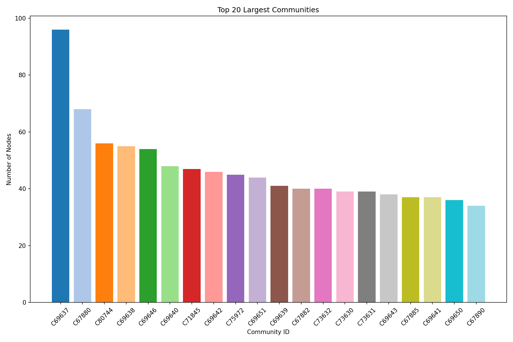
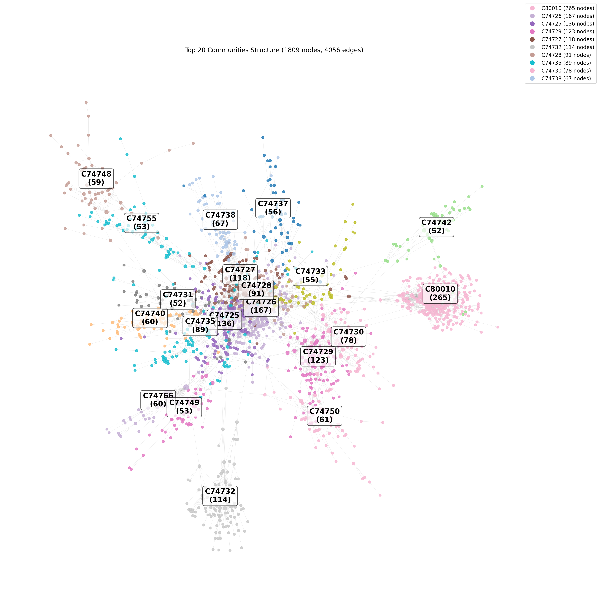

Community Detection Analysis Results
Summary Statistics
Total nodes: 395282
Total edges: 413832
Total communities: 95168
Largest community: 71661 (122 nodes)
Graph connected components: 68282
Largest connected component: 230616 nodes (58.3% of graph)
Note: This graph has 68282 connected components, which may naturally form separate communities.
High modularity values are expected in disconnected graphs as there are no edges between components.
Community Size Distribution

Top Communities Overview
